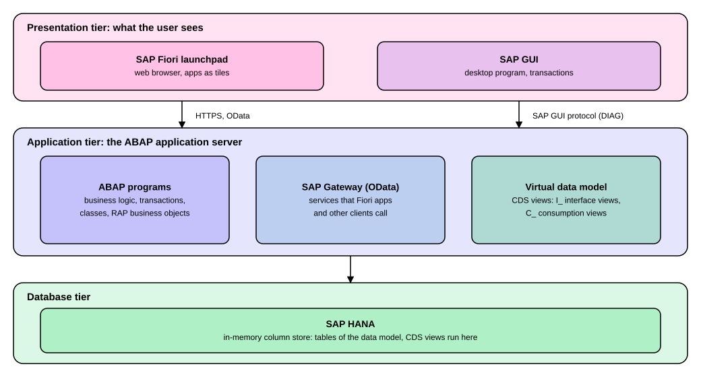

Architecture and the Virtual Data Model
|
This content was generated with the assistance of AI and should be verified against the official documentation before being relied on in production. |
When you open an SAP S/4HANA system for the first time you see only a screen: a launchpad with tiles in a web
browser, or a program called SAP GUI with a menu of transactions. Behind that screen sit two more layers: an
application server that runs the business logic, and a database that stores the data. This page names the three layers,
shows which part does what, and then explains the layer that a newcomer meets next when reading about reports, apps and
interfaces: the virtual data model, a large set of database views whose names start with I_ or C_. After reading it
you can say where a screen, an app, a data service and a table each live, and you can read a view name such as
C_GoodsMovementQuery_2 and tell what kind of view it is. The page is written against SAP S/4HANA on premise and
Private Edition 2025 FPS02 and SAP S/4HANA Cloud Public Edition 2608. The three layers are the same in all editions.
What differs is who runs them and what you may change: in the on-premise and Private Edition systems the customer (or
SAP for Private Edition) operates a system that also gives access to SAP GUI and classic ABAP, while in the Public
Edition SAP operates the system and you work through the launchpad and released interfaces.
Before you read
-
Getting Started: what ABAP is and what an ABAP system is.
-
CDS View Entities: how a CDS view is written, if you want to see the code behind the views described here.
Key terms
-
SAP HANA: the in-memory, column-oriented database that SAP S/4HANA runs on.
-
ABAP application server: the middle layer that runs ABAP programs and holds the business logic.
-
SAP Gateway: the component that exposes data and business functions of an ABAP system as OData services.
-
OData: a web protocol, built on HTTP and REST, for reading and changing data.
-
SAP Fiori launchpad: the web entry point where users start apps from tiles.
-
SAP GUI: the desktop program that shows classic SAP screens, called transactions.
-
CDS view: a database view defined with Core Data Services, a data modeling language.
-
Virtual data model (VDM): the set of CDS views, with common naming and modeling rules, through which S/4HANA exposes its business data.
-
Interface view: a VDM view with the prefix
I_that presents business data to the rest of the model. -
Consumption view: a VDM view with the prefix
C_made for one use such as an app or an analytical query.
The three tiers
SAP S/4HANA is, in the words of SAP Learning, the SAP Suite 4 the HANA Database: the next-generation ERP suite that replaces SAP ERP Central Component (SAP ECC), built on the SAP HANA database and using the SAP Fiori user interface. Technically it follows the classic layout of SAP systems, three tiers, drawn in the figure. The top tier is what the user sees, the middle tier runs ABAP code, and the bottom tier stores the data. A request goes down through the tiers and the answer comes back up.

The figure is a teaching simplification. A real system has more parts (a web dispatcher, several application servers, separate front-end servers, and so on), but these three tiers are enough to place almost every topic of this section.
| Tier | What runs there | What you meet there |
|---|---|---|
Presentation |
SAP Fiori launchpad in a web browser, SAP GUI on a desktop. |
Tiles, apps, transactions, screens, input fields. |
Application |
The ABAP application server: ABAP programs, SAP Gateway, the virtual data model. |
Business logic, authorization checks, OData services, CDS views. |
Database |
SAP HANA. |
Database tables and the execution of the CDS views. |
Presentation tier: SAP Fiori launchpad and SAP GUI
SAP Learning calls the SAP Fiori launchpad the central entry point for SAP S/4HANA users on mobile and desktop devices. It is a shell that hosts SAP Fiori apps and provides navigation, personalization, embedded support, application configuration and the AI assistant Joule. Users start apps from tiles, which are organized by business role so that people see only the apps relevant to their tasks, and hundreds of SAP Fiori apps exist across industries and lines of business. A later page of this section, SAP Fiori Launchpad, covers tiles, spaces and pages in detail.
SAP GUI is the older front end, a program installed on the user’s computer that shows the classic screens. It talks to the application server with its own protocol, DIAG. The SAP Library glossary defines DIAG (Dynamic Information and Action Gateway) as the technology for communication between the SAP system and front-end components, among them SAP GUI for Windows, SAP GUI for Java and SAP Console. That glossary entry belongs to an older library version, but the definition is the one SAP gives. A later page, SAP GUI Basics, shows how to use it. The two front ends are not alternatives for the same screen: a classic transaction opens in SAP GUI, a Fiori app opens in the launchpad, and one system usually offers both (on premise and Private Edition) next to each other.
Source: SAP Learning: Describing the Technical Layers and Deployment Variants of SAP S/4HANA and SAP Library Glossary: DIAG protocol (an older library version)
Application tier: ABAP programs and SAP Gateway
The middle tier is the ABAP application server. It runs the ABAP programs in which SAP’s business logic is written, and it is the tier you extend when you write your own ABAP code (see Getting Started). Two parts of this tier matter for the rest of this page.
The first is SAP Gateway. The SAP Fiori overview documentation says the SAP Gateway is used to set up and activate the OData services, that these services are a mandatory component for running SAP Fiori apps, and that the apps use OData to display data from the back end and to update it. OData is a standardized protocol for creating and consuming data APIs that builds on HTTP and REST. The SAP Gateway Foundation documentation (2025 FPS02) adds that SAP Gateway complies with the REST paradigm and describes the usual requests: GET reads one entry or a collection, POST creates, PUT updates, PATCH updates single properties and DELETE removes. The same documentation notes that for OData version 4 SAP strongly recommends a programmatic approach with ABAP Development Tools rather than the Service Builder, which is the path the RAP pages take (see Projections, Service Definitions and OData V4 Bindings).
An overview page of the Fiori documentation (an older version, written for 1809) describes three ways to place SAP Gateway in a landscape. In the embedded deployment the OData services are developed, registered and published in the back-end system. In the hub deployment the service implementation and registration take place in the back end and the services are activated on a separate SAP Gateway server. In the third option, OData provisioning, the hub components run as a cloud service. Take these as the concepts. Which option your system uses is a landscape decision, and the current Fiori documentation for your release has the details.
The second part is the virtual data model, described in the next section. It is not a separate server: it is a set of CDS views that the application server defines, and that SAP HANA executes.
Source: SAP Gateway Foundation: SAP Gateway, REST and OData and SAP Fiori Overview: SAP Gateway and OData V4 (an older page, version 1809)
Database tier: SAP HANA
SAP HANA is an in-memory, column-oriented database. SAP Learning explains the two ideas. In-memory means that the engine processes data directly in main memory (RAM) instead of reading it from disk, which makes access, querying and processing much faster. Column-oriented means that all the data of one column is stored together, so a query reads only the columns it needs instead of scanning whole rows and throwing away what it does not need. For you as a reader the consequence is practical: SAP S/4HANA lets the database do more of the calculation. Instead of reading every record into the application server and adding things up in ABAP, a CDS view or an ABAP SQL statement can ask HANA to compute the result. Moving work to the database in this way is called code pushdown, and ABAP for SAP HANA and Code Pushdown explains it with code.
The virtual data model
The business data of an SAP system sits in database tables, and tables are a poor way to read business data. Their names are often short technical codes, one business object is spread over several tables, and the meaning of a column is not obvious. SAP’s answer in S/4HANA is the virtual data model (VDM). The help portal defines it as the basis for data access in SAP S/4HANA, for example for analytical applications and APIs. The VDM of SAP S/4HANA Cloud Public Edition, Private Edition and on-premise S/4HANA is represented by CDS views. These views follow consistent modeling and naming rules, and they expose the business data stored in database tables in a format based on business semantics, which makes it easier to consume.
"Virtual" is the useful word. A CDS view stores no data of its own. It is a definition, a stored query, and the data is read from the tables below it when somebody selects from the view. So the VDM is a layer of meaning put on top of the tables, in the same way that a well-named spreadsheet sheet is easier to read than the raw export it was built from.
SAP Learning describes the same layer as Core Data Services (CDS), a set of domain-specific languages and services for defining and consuming semantically rich data models. Developers use CDS views to model database data for analysis or to generate APIs for external data consumption, typically for user interfaces, analytical tools or external systems. How a view is written is the subject of the ABAP pages, in particular CDS View Entities, CDS Associations and Compositions and CDS Access Control (DCL). This page is about how SAP uses them.
Source: Virtual Data Model and CDS Views in SAP S/4HANA (2025 FPS02), Virtual Data Model and CDS Views in SAP S/4HANA Cloud Public Edition (2608) and SAP Learning: Describing the Technical Layers and Deployment Variants of SAP S/4HANA
How to read a VDM view name
SAP names the views of the VDM by a rule, and the rule lets you recognise the kind of a view from its name alone. The
help portal states that a VDM CDS view name has up to four elements. The prefix is obligatory and tells the view type.
The semantic name is obligatory and says in business words what the view is about. A suffix is optional and states the
purpose further. A version number is optional and is added, separated by an underscore, when more than one version of a
view exists. The example in the documentation is C_GoodsMovementQuery_2: prefix C_ (a consumption view), semantic
name GoodsMovement, suffix Query (an analytical query view) and version number _2.
The usual prefixes, as the help portal lists them, are the following.
| Prefix | View type (SAP’s wording) | What it means for you |
|---|---|---|
|
Basic interface view, composite interface view. |
The business entity as the model offers it to the rest of the system. A basic interface view covers one entity, a composite one is built on top of other views. |
|
Consumption view. |
A view shaped for one use, such as an app or an analytical query. |
|
Basic restricted reuse view, composite restricted reuse view. |
A view with restricted reuse. |
|
Private view. |
An internal building block of other views. Do not build on it. |
|
Remote API view. |
A view that backs an API for remote use. |
|
View extend. |
A view that extends another one. |
|
Extension include view. |
A view used to extend a view. |
|
Derivation function. |
A derivation function. |
|
Abstract entity. |
An abstract entity. |
The same page lists common suffixes: Query (also Qry or Q) for an analytical query view, Cube (or C) for an analytical
cube view, Text (Txt, T) for a provider of language-dependent text, TP for a transactional processing view, and VH or
StdVH for a (standard) value help view. A view can combine suffixes: the documentation gives C_BillOfOperationsStatusTextTP
as an example of a view that is both a text view and a transactional processing view. The list of suffixes is not
exhaustive. Field names follow a rule too: they are based on business semantics, written in camel case, with an object, a
property and a representation term, for example SalesOrderConfirmationDate (object SalesOrder, property
Confirmation, representation term Date). The help portal also says each VDM view receives an annotation that
indicates its view type, so the prefix is a convenience for readers and tools, and the annotation is the formal marker.
A caution about the letters. The same help portal gives two descriptions that are close but not identical. The VDM page
above lists I_ as interface view and C_ as consumption view. The naming conventions page of the ABAP RESTful
Application Programming Model (RAP) says I_ marks an interface view, R_ the base CDS view entity, C_ a projection
view (the C stands for the consumption layer) and E_ an extension include view. RAP’s R_ is therefore the base
entity of a business object, while the VDM’s R_ is a restricted reuse view, and you read the surrounding page to know
which convention applies. The RAP page also says that for your own objects you use your own namespace and that the
namespace /DMO/ is reserved for demonstration, so customer views carry a Z or Y or a namespace in front of the
prefix. The running example of the ABAP pages follows this: ZI_ExpClaim is the interface view of the expense claim
and ZC_ExpClaim its projection for an app, as
CDS View Entities shows.
Layers: from table to app
Views are stacked. Each layer reads the one below, and each has one job.
-
The database tables hold the data in technical form.
-
Interface views (
I_) present it in business terms. This is the layer to reuse. For example, the RAP documentation mentions that the interface viewI_Currencyis generally available in a development system, and uses it as a source of master data for value helps. -
Consumption views (
C_) shape the data for a particular use: an app that needs certain fields and annotations, or an analytical query. -
An OData service built on top of a consumption (projection) view lets a Fiori app, or another client, read the data over HTTP through SAP Gateway.
Private views (P_) may sit between the layers as helpers, and they are not meant for reuse. Reading from the top
down, this is the answer to "where does this tile get its data?": the tile starts an app, the app calls an OData
service, the service is exposed by SAP Gateway on the application server, the service reads a consumption view, that
view reads interface views, and SAP HANA runs the whole query against the tables.
Reusing VDM views safely: stability contracts
Not every VDM view is open to customers. The help portal says a subset of SAP’s VDM CDS views is available for reuse by customers and partners. The reason is stability. SAP wants views to stay flexible for its own development, and also stable enough that consumers, including custom CDS views, do not need to be adjusted after every upgrade. For this, SAP introduced three stability contracts: a contract for extensions (C0), a contract for system-internal use (C1) and a contract for remote API use (C2). Where a view has to be retired, SAP uses a deprecation process that gives customers a period to adapt their content. The practical rule is the clean core rule: build your own views and extensions on views that SAP has released, and avoid unreleased ones, because unreleased views may change or disappear. The ABAP pages explain the same contracts from the code side (Language Versions and Released APIs) and what clean core means for development (Clean Core and Cloud Readiness).
What this means in each edition
The architecture does not change between editions, but what you can touch does.
| Topic | On premise and Private Edition (2025 FPS02) | Cloud Public Edition (2608) |
|---|---|---|
Front ends |
SAP Fiori launchpad and SAP GUI. |
SAP Fiori launchpad. Whether SAP GUI is offered is not covered by the pages used for this one, so check the product documentation. |
VDM and CDS views |
The VDM is made of CDS views, a subset released for reuse. |
The same statement appears in the Public Edition documentation, and the same stability contracts apply. |
Database |
SAP HANA. |
SAP HANA. |
For a developer the lesson is the same in both: start from released interface views and released APIs, and do not read the underlying tables directly unless a released view does not exist.
Summary
-
SAP S/4HANA has three tiers: presentation (SAP Fiori launchpad in a browser, SAP GUI on the desktop), application (the ABAP application server with ABAP programs, SAP Gateway and the virtual data model) and database (SAP HANA).
-
SAP Gateway exposes OData services, which Fiori apps need to read and update back-end data. SAP GUI talks to the server with the DIAG protocol.
-
SAP HANA is in-memory and column-oriented, so S/4HANA pushes calculation down to the database.
-
The virtual data model is a layer of CDS views with business names on top of the tables. A view stores no data: it is a query that HANA executes.
-
View names carry their type in the prefix:
I_interface view,C_consumption view,P_private view, and further prefixes such asR_,A_andE_. The RAP guide describesR_andC_slightly differently, so read the convention of the page you are on. -
Only a subset of the VDM views is released for customers. Build on released views (stability contracts C0, C1 and C2).
References
-
SAP Learning: Describing the Technical Layers and Deployment Variants of SAP S/4HANA
-
Virtual Data Model and CDS Views in SAP S/4HANA (2025 FPS02)
-
Virtual Data Model and CDS Views in SAP S/4HANA Cloud Public Edition (2608)
-
SAP Fiori Overview: SAP Gateway and OData V4 (older, version 1809)
-
SAP Library Glossary: DIAG protocol (older library version)